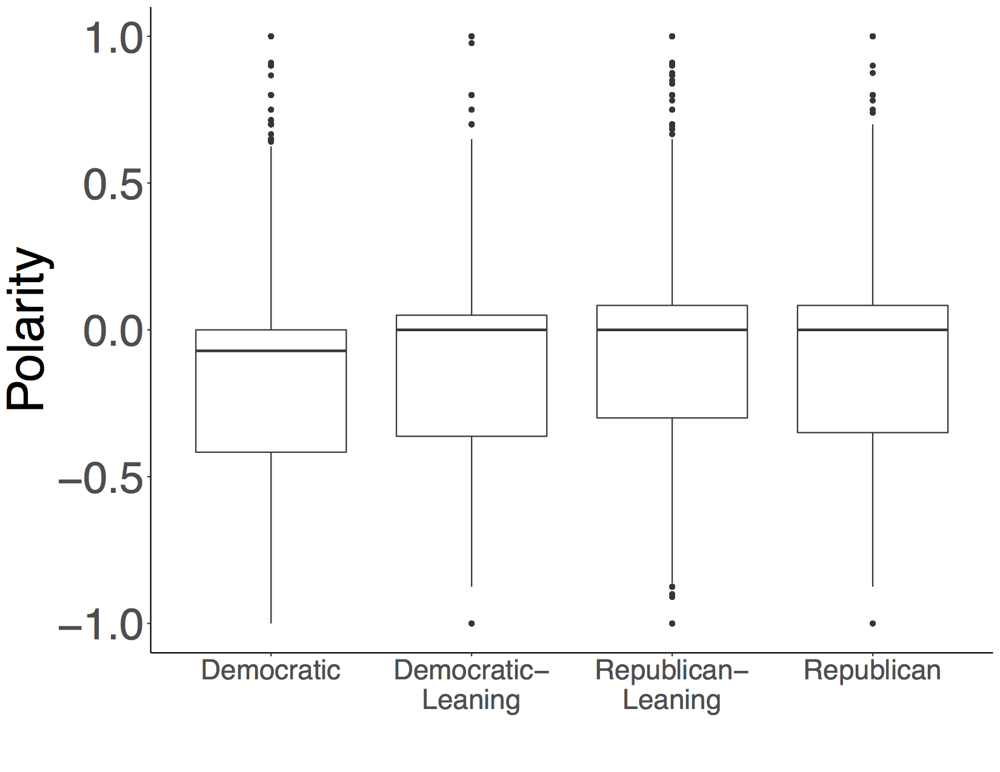

Support for Paying College Athletes Uncorrelated with Political Affiliation
tl;dr
We analyzed the sentiment of tweets that mention paying college athletes
and found that most of these tweets are against paying college athletes.
This was true whether the tweets were sent from democratic or republican states.
The Problem
California governor Gavin Newsom signed the controversial Fair Pay to Play Act into law on 30 September 2019.
This law allows college athletes to charge money for the use of their
"name, likeness, and image," and has sparked a nationwide debate about whether college athletes should be paid.
In this project, we use twitter data and sentiment analysis to investigate how different states view the payment of college athletes.
We find that all states have a negative sentiment towards this topic, and that this negative sentiment is slightly stronger in democratic states than republican states.
The Data
First, we gathered all geotagged tweets sent between 26 October 2017 and 16 November 2019.A geotagged tweet is a tweet that contains the GPS coordinates the tweet was sent from. Twitter users must opt-in to geotagging their tweets in their privacy settings, and only about 1% of all tweets are geotagged in this way. We use this range of tweets because they are made available with .
In total, we gathered approximately 3 billion tweets.
Then, we generated our dataset by extracting only the tweets that mention paying college athletes.In particular, we extracted those tweets mentioning any of the following terms: 'ncaa paying', 'college athlete paid', 'athlete compensation', 'pay athlete', 'paying athlete',
'paying players', 'pay players', 'college endorsement', 'benefit from their name',
'athletic sponsorship', 'pay student athletes', 'pay student-athletes', 'paying student athletes',
, 'paying student-athletes', 'student athlete market', 'student-athlete market', 'college athlete endorsement',
'ncaa endorsement', 'ncaa pay', 'paying student athlete', 'pay student-athlete', 'paying student-athlete', 'pay student athlete', 'athlete endorsement deal',
'paying college athletes', 'paying college athlete', 'name, likeness, and image', '#payforplay #ncaa', '#ncaa #payforplay',
'paying collegiate athletes', '#ncaa #paytoplay', '#paytoplay #ncaa', 'fair pay to play', 'signs sb206', 'sign sb206', 'paid student athlete', 'paying collegiate athlete', 'college athletes to profit', 'compensation for name and likeness',
'pay to play bill', 'pay to play act', 'pay-to-play bill', 'pay-to-play act', 'pay for play bill', 'pay for play act', 'pay ncaa athletes',
'paying ncaa athletes', 'college athletes to hire agents', 'ncaa athletes to hire agents', 'college athletes to hire an agent', 'ncaa athletes to hire an agent',
'college athletes to be paid', 'college players monetizing'.
This resulted in a dataset containing 11,545 tweets.
Here is an example of a tweet with positive sentiment:

Here is an example of a tweet with negative sentiment:

Frequency of Tweets over Time
The following plot shows how the number of tweets mentioning paying college athletes has varied with time.

There are three large spikes in the frequency of tweets.
The first two in March 2018 and March 2019 coincide with March Madness.
The third spike in October 2019 coincides with the signing of the Fair Pay to Play Act.
Sentiment of Tweets over Time
Next, we used Python's textblob library to calculate the polarity of each tweet.
The polarity can be any value between -1 and +1.
A polarity of -1 indicates the tweet has a highly negative sentiment (and thus is strongly against paying college athletes),
a polarity of +1 indicates the tweet has a highly positive sentiment (and thus is strongly in favor of paying college athletes),
and a value in between indicates a more moderate sentiment.
The following chart plots the average sentiment over time.

The average sentiment is about -0.15, and so Americans on average have a negative sentiment towards paying college athletes.
This sentiment increased dramatically in May 2018,
which suggests that Americans may be warming up to the idea of paying college athletes.
Unfortunately, we do not have an explanation for why this change might have occurred.
Sentiment of Tweets by Political Affiliation
In our last analysis, we looked at how the political affiliation of a state correlates with opinion on paying college athletes.
To do this, we divided states into four categories:
democratic, democratic-leaning, republican-leaning, and republican.We defined political affiliation based on the fraction of the state's Democratic to Republican congressional representatives using the data from wikipedia.
A fraction greater than 0.75
indicates a Democratic state, a affiliation between 0.5 and 0.75 indicates a Democratic-leaning state, an
affiliation between 0.25 and 0.5 indicates a Republican-leaning state, and an affiliation
less than 0.25 indicates a Republican state.
Then, we measured the polarity of tweets sent from states in these categories and plot the results below.

All four categories have similar distributions.
The democratic states having the most negative comments,
but only slightly.
Therefore, we conclude that the political
affiliation of a state does not have a strong effect on that state's attitude towards paying college athletes.
Conclusion
Due to the biased nature of twitter data,
we can only draw limited conclusions from this study about the American population.
In particular, Twitter users are not a representative sample of the American population,
and most political tweets are generated by a small number of power users.
Therefore, while the results above suggest that most Americans do not support paying of college athletes regardless of political affiliation,
more robust surveys are necessary to definitively prove this point.